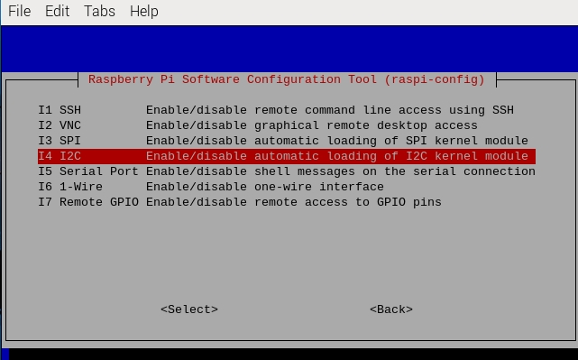

Настройка I2C
Данная инструкция описывает пошаговую настройку интерфейса I2C на Raspberry Pi 5 с использованием утилиты raspi-config.
Примечание
Если вы установили готовый учебный образ набора, все необходимые настройки уже выполнены, и выполнение данных действий не требуется. Данная инструкция предназначена для пользователей, устанавливающих общедоступные образы Raspbian OS, где настройка I2C производится вручную.
Подготовка системы
Перед началом настройки убедитесь, что ваша система обновлена:
sudo apt update
sudo apt upgrade
Включение I2C через raspi-config
Запуск утилиты конфигурации
Откройте терминал и выполните команду:
sudo raspi-configВыбор настроек интерфейсов
В главном меню выберите пункт «Interface Options» (Настройки интерфейсов).

Активация I2C
Найдите пункт «I2C» и нажмите Enter. После этого выберите «Yes» для подтверждения включения интерфейса I2C.
Перезагрузка системы
После включения I2C выйдите из утилиты и перезагрузите Raspberry Pi для применения настроек:
sudo reboot
{kind=link}
Проверка работы I2C
После перезагрузки установите необходимые утилиты для работы с I2C:
sudo apt install -y i2c-tools
Проверьте наличие подключённых I2C-устройств с помощью следующей команды:
sudo i2cdetect -y 1
Результат выполнения команды должен отобразить таблицу с адресами обнаруженных устройств.
pi@raspberrypi ~ $ i2cdetect -y 1
0 1 2 3 4 5 6 7 8 9 a b c d e f
00: -- -- -- -- -- -- -- -- -- -- -- -- --
10: -- -- -- -- -- -- -- -- -- -- -- -- -- -- -- --
20: -- -- -- -- -- -- -- -- -- -- -- -- -- -- -- --
30: -- -- -- -- -- -- -- -- -- -- -- -- -- -- -- --
40: -- -- -- -- -- -- -- -- 48 -- -- -- -- -- -- --
50: -- -- -- -- -- -- -- -- -- -- -- -- -- -- -- --
60: -- -- -- -- -- -- -- -- -- -- -- -- -- -- -- --
70: -- -- -- -- -- -- -- --
Заключение
После выполнения всех шагов интерфейс I2C будет успешно активирован на вашем Raspberry Pi 5. Если у вас возникнут вопросы или проблемы, обратитесь к официальной документации Raspberry Pi или к сообществу пользователей.